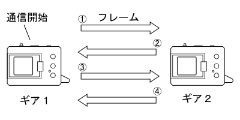
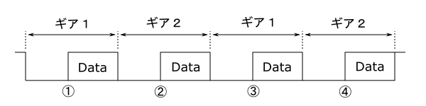
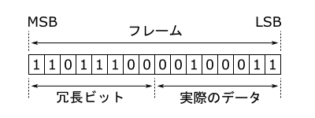
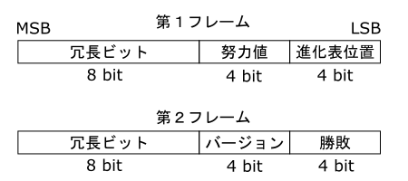
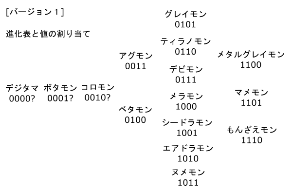

初代「デジタルモンスター」の通信
記事作成 : 2016/11/24(木) 最終更新 : 2016/11/25(金)
はじめに
ここでは「デジタルモンスター」の原点である初代育成ギアの通信について解説します。 初代育成ギアの通信はD-Linkを使用するすべてのギアが対応していますので、 この通信形式だけ理解しておけば多くのギアとバトルできる回路を作ることができます。
一応、バトルの形式について説明しておきますが、初代育成ギアではバトルはオートで行われます。 以降のギアでは一般的となるバトル中のHPといった概念もなく、結果は勝ちか負けかの2パターンのみです。 さらには、攻撃のドットも全てのバージョンで変化がありません(一部変化するデジモンもいますが)。 このことからも、通信に必要なデータ量は相当少なくて済むことが分かります。 通信解析の入門としてもまさに打って付けといった感じです。
通信の流れ
育成ギアの通信は下の図に示すようにフレームを交互に送信することで行われます。 (フレームについてはD-Linkを参照してください。) まず、通信を開始した(真ん中のボタンを押した)側のギアが最初のフレームを送信します。 その直後に、相手側のギアがフレームを送信し、その後また開始した側がフレームを送信するという流れになります。
通信時の信号波形は下のような感じです。 ギア1のフレーム送信が終了した直後にギア2のStartパルスが送信されています。
D-Linkのフレームは16ビットですが初代育成ギアでは、半分を冗長ビットとして使用しています。 そのため1フレームで送信される情報は実質8ビットです。
初代育成ギアの通信では、それぞれ2フレーム送信されますが、このフレームはどちらのギアでも同じフォーマットをしています。 ここでは、このフォーマットをデータセットと呼ぶことにします。
冗長ビット
初代育成ギアではフレームの上位8ビットが冗長ビットとなっています。 この冗長ビットは下位8ビットの各ビットを反転したものです。 例えば、下位8ビットが"00100011"だった場合、冗長ビットはそれを反転した"11011100"となり、フレーム全体では"1101110000100011"となります。 ここが間違っていた場合は通信エラーとなります。
データセット
初代育成ギアのデータセットは2つのフレームで構成されます。 1つのフレームの半分は冗長ビットなので実際のデータは2バイトだけです。 このデータセットを互いに送信することで通信が行われます。 フレームの下位8ビットはさらに2つに分けられ、各4ビットで全部で4つのデータが送られます。
【進化表位置】
デジモンの種類を特定するためのフィールドです。 実際にはバージョンによってデジモンが変わるので進化表位置と呼ぶことにします。 初代育成ギアでは、この進化表位置で強さ、相性、攻撃ドットが決定します。
値は下の図のように順番に割り当てられます。 アグモンは"0011"で、数値で言えば3になります。 このことからボタモンとコロモンにもそれぞれ1、2が割り当てられていることが推測されます(バトルできないんで確認はできませんが)。 他のバージョンについても同様に数値が割り当てられています。 つまり、ガブモンやパタモンも進化表位置がアグモンと同じなので"0011"となります。
【努力値?】
ここはまだ正確には分かっていませんが、恐らくトレーニングやプロテインで増加した分の強さを表すフィールドだと思います。 何回のトレーニングで増加するか、どのくらい勝率に影響するかなどは今後解析していく予定です。
【勝敗】
バトルの勝敗を表すフィールドです。 勝利は"0001"で、敗北が"0010"となります。 通信の流れからも分かるように、ここの値は通信を開始した側が一方的に決めることができます。 相手側はそれに従い、勝利"0001"が送られてきたら敗北"0010"を返し、敗北"0010"が送られてきたら勝利"0001"を返します。 通信を開始した側が相手から送られてきた勝敗情報をどうするかは特に決まっていません。 初代育成ギアでは無視しますが、デジヴァイスでは相手側が送ったものに従うようです。
【バージョン】
育成ギアのバージョンを表すフィールドです。 値はバージョン1が"0000"、バージョン2が"0001"、バージョン3が"0010"のように増えていきます。 0から始まってるので、ここの値は"バージョン番号 - 1"となります、ややこしいですね。
ちなみに、バージョン1は、このフィールドの挙動が他のものと異なります。 バージョン1が通信を開始した側であるときは普通なのですが、受けた側のときは相手が送信したバージョン情報をオウム返しします。 例えば、バージョン1とバージョン4が対戦する場合、バージョン4が通信を開始すると、バージョン1のここのフィールドは"0011"になります。 なぜこのような仕様なのかは不明です。
プログラム
文章で説明するより、プログラムを見た方が分かりやすいという人も多いと思いますので、 下にArduinoで対戦をするサンプルの一部を載せておきます。 このサンプルでは育成ギア側がフレームを送信することで通信を開始します。 勝敗についても育成ギア側が処理して送ってくるので、Arduino側はそれと反対のものを送信するだけ済みます。 15行目と25行目が冗長ビットを付与して送信するフレームを生成する処理です。 データをビット反転し、それを左に8ビットシフトすることで冗長ビットを生成しています。
Arduinoでバトルするサンプルプログラム(loop部分のみ)
loop()
{
byte position = 0b0011; // アグモン
byte effort = 0b0000; // 努力値0
byte result;
byte version = 0b0000; // バージョン1
word dat1, dat2;
word sFrame1, sFrame2;
word rFrame1, rFrame2;
rFrame1 = dlinkRecv(); // 第1フレーム受信
// 第1フレーム生成
dat1 = (effort << 4) | position;
sFrame1 = (~dat1 << 8) | dat1;
dlinkSend(sFrame1); // 第1フレーム送信
rFrame2 = dlinkRecv(); // 第2フレーム受信
// 勝敗を設定
if ((rFrame2 & 0b11) == 0b01) {
result = 0b10;
} else {
result = 0b01;
}
// 第2フレーム生成
dat2 = (version << 4) | result;
sFrame2 = (~dat2 << 8) | dat2;
dlinkSend(sFrame2); // 第2フレーム送信
}